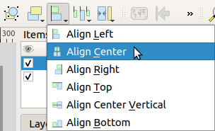
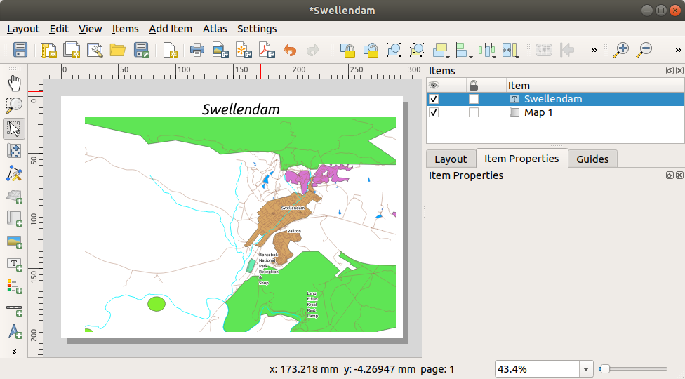

重要
翻訳は あなたが参加できる コミュニティの取り組みです。このページは現在 100.00% 翻訳されています。
4.1. レッスン: 印刷レイアウトを使う
さて、地図を手に入れたら、それを印刷したり、文書に書き出したりする必要があります。なぜなら、GIS地図ファイルは画像ではないからです。GIS地図ファイルは画像ではなく、GISプログラムの状態を保存したもので、全てのレイヤの参照、ラベル、色などが含まれています。そのため、同じデータや同じGISプログラム（QGISなど）を持っていない人にとっては、地図ファイルは役に立たないことになります。幸いなことに、QGISは地図ファイルを誰でも読める形式にエクスポートすることができますし、プリンタを接続すれば地図をプリントアウトすることもできます。エクスポートも印刷も、 印刷レイアウト で処理されます。
このレッスンの目標： QGIS 印刷レイアウト を使い、必要な設定が全て行われた基本的な地図を作ること。
4.1.1. ★☆☆ （初級レベル） 理解しよう: レイアウトマネージャ
QGISでは、同じマップファイルを使って複数の地図を作成することができます。そのため、レイアウトマネージャ と呼ばれるツールが用意されています。
メニューをクリックして、ツールを起動します。すると、空の レイアウトマネージャ ダイアログが表示されます。
テンプレートから新規作成 の下にある 空のレイアウト を選び、 作成... ボタンを押します。
新しいレイアウトに Swellendam という名前を付けて、 OK をクリックします。
これで、印刷レイアウト ウィンドウが表示されます:

また、この新しいレイアウトは メニューで作成することもできます。
どちらの方法をとったとしても、新規印刷レイアウトは、下の画像のように メニューからアクセスできるようになりました。
4.1.2. ★☆☆ （初級レベル） 理解しよう: 基本地図の構図
この例では、構図はすでに望んだ形になりました。あなたのものが同様であることを確認してください。
レイアウトウィンドウの中央でシートを右クリックし、コンテキストメニューから ページのプロパティ... を選択します。
アイテムプロパティ タブの値が、以下のように設定されていることを確認します:
大きさ:
A4方向:
横
今、ページレイアウトは望んでいたようになっていますが、このページはまだ空白です。これは明らかに地図を欠いています。その問題を修正しましょう！
 地図を追加 ボタンをクリックします。
地図を追加 ボタンをクリックします。このツールを有効にすると、ページ上に地図を配置することができるようになります。
クリックして、空白のページにボックスをドラッグします。

地図がページに表示されます。
クリックしてドラッグすることで地図を移動します。

端にあるボックスをクリックしてドラッグすることで、サイズを変更できます:

注釈
地図はもちろん全く違って見えてもよいです！これは、自身のプロジェクトが設定されている方法によって異なります。しかし、心配しないように！これらの命令は一般的なので、地図自体がどのように見えるかに関係なく、同じ動作をします。
縁に沿って余白、および上辺に沿ってタイトル用に空白を残すようにしてください。
これらのボタンを使って（地図でなく！）ページ上で拡大、縮小します：


QGIS のメイン ウィンドウでマップをズームおよびパンします。また、
 アイテムのコンテンツを移動 ツールを使用してマップをパンすることができます。
アイテムのコンテンツを移動 ツールを使用してマップをパンすることができます。拡大または縮小に応じて地図ビューは更新されます
何らかの理由で地図ビューが正しく更新されない場合、 ビューを更新 ボタンをクリックすることで強制的にマップを更新することができます。
地図の大きさと位置は、最終的なものでなくてもかまいません。もし満足できなければ、いつでも後で戻って変更することができます。とりあえず、このマップに関する作業を確実に保存しておく必要があります。QGIS の 印刷レイアウト はメイン マップ ファイルの一部であるため、プロジェクトを保存する必要があります。
 に移動します。これは、メインダイアログにある便利なショートカットです。
に移動します。これは、メインダイアログにある便利なショートカットです。
{kind=link}
4.1.3. ★☆☆ （初級レベル） 理解しよう: タイトルを追加する
さて、地図はページ上で見栄えがしますが、読者/ユーザーはまだ何が起こっているのか知らされていません。読者やユーザーには文脈が必要です。地図要素を追加することで、読者やユーザーに文脈を提供することができます。まず、タイトルを追加してみましょう。
 ラベルを追加 ボタンをクリックします
ラベルを追加 ボタンをクリックします地図の上でページをクリックし、 新規アイテムのプロパティ ダイアログで提案された値を受け入れると、地図の上にラベルが表示されます。
サイズを変更し、ページの上部中央に配置します。それは地図の大きさを変更したり移動するのと同じ方法で大きさを変更したり移動できます。
タイトルを移動すると、ページの中央にタイトルの配置を助けるガイドラインが現れることに気づくでしょう。
ただし、アクションツールバーには、タイトルを（ページではなく）マップに相対的に配置するためのツールもあります:

マップをクリックしてそれを選びます
キーボードの Shift を押したまま、地図とラベルの両方が選択されるようにラベルをクリックしてください。
- 選択を左寄せ整列する ボタンを探して、その横のドロップダウン矢印をクリックし、位置決めオプションを表示し、 中央揃え をクリックします:
 これで、ラベルの内容ではなくフレームが地図の中央に配置されました。ラベルの内容を中央に表示するには：
クリックしてラベルを選択します。
レイアウトウィンドウのサイドパネルにある アイテムプロパティ タブをクリックします。
ラベルの文字を"Swellendam"に変更します:
このインターフェイスは 外観 セクションのフォントと配置のオプションを設定するために使用します：
大きめの、しかし実用的なフォントを選びます (この例では、サイズ
36のデフォルトフォントを使用します)水平方向配置 を 中央 に設定します。
フォントの色も変更できますが、デフォルトのとおりに黒のままにしておくのがおそらく最善です。
デフォルトの設定では、タイトルのテキストボックスにフレームを追加しません。フレームを追加したい場合は、そうすることができます：
アイテムプロパティ タブで、フレーム オプションが表示されるまで、スクロールダウンします。
フレーム チェックボックスをクリックしてフレームを有効にしてください。フレームの色や幅も変更できます。
この例ではフレームを有効にしていないので、これまでのところ私たちのページはこうなっています：
 せっかく整列させたのに、間違って動かしてしまわないように、アイテムを固定することができます:
ラベルと地図の両方を選択します
アクション ツールバーの
 選択アイテムを固定する ボタンをクリックします。
選択アイテムを固定する ボタンをクリックします。注釈
アクション ツールバーの
 すべてのアイテムの固定を解除 ボタンをクリックすると、アイテムの編集が再び可能になります。
すべてのアイテムの固定を解除 ボタンをクリックすると、アイテムの編集が再び可能になります。
{kind=link}
4.1.4. ★☆☆ （初級レベル） 理解しよう: 凡例を追加する
また、地図の読者は、地図上のさまざまな事柄が実際に何を意味しているのかを理解する必要があります。地名のように一目瞭然の場合もあれば、森の色のように推測が難しい場合もあります。では新しい凡例を追加してみましょう。
 凡例を追加 ボタンをクリックします
凡例を追加 ボタンをクリックします凡例を配置するページの上でクリックし、 新規アイテムのプロパティ ダイアログで提案された値を受け入れます。
レイアウトページに凡例が追加され、メインダイアログで設定されたレイヤシンボル体系が表示されます。
いつものように、アイテムをクリックして好きな場所に移動させることができます:

4.1.5. ★★☆ （中級レベル） 理解しよう: 凡例をカスタマイズする
凡例上のすべてが必要ではありませんので、いくつかの不要な項目を削除しましょう。
アイテムプロパティ タブの中に、 凡例アイテム グループが表示されます。
 自動更新 ボックスをオフにすると、凡例の項目を直接変更できるようになります
自動更新 ボックスをオフにすると、凡例の項目を直接変更できるようになりますbuildings を持つエントリを選択します
 ボタンをクリックして、それを凡例から削除します
ボタンをクリックして、それを凡例から削除します
また、アイテムの名前を変更できます。
同じリストからレイヤを選択します。
 アイテムのプロパティを編集 ボタンをクリックします。
アイテムのプロパティを編集 ボタンをクリックします。レイヤの名前を
Places,Roads and Streets,Surface Water,Riversに変更します。
また、アイテムを並び替えることもできます:
{kind=link}
凡例はおそらく新しいレイヤ名によって広がることになるので、凡例または地図を移動したり大きさを変更したい場合があります。これがその結果です：

4.1.6. ★☆☆ （初級レベル） 理解しよう: 地図をエクスポートする
注釈
しばしば作業を保存することを覚えていましたか？
ようやく地図をエクスポートする準備ができました。レイアウトウィンドウの左上隅にエクスポートボタンが見えます:
 印刷レイアウト: プリンタとのインタフェースを提供します。プリンタのオプションは、使用するプリンタのモデルによって異なるので、このトピックに関する詳細な情報は、プリンタのマニュアルや印刷に関する一般的なガイドを参照する方がよいでしょう。
印刷レイアウト: プリンタとのインタフェースを提供します。プリンタのオプションは、使用するプリンタのモデルによって異なるので、このトピックに関する詳細な情報は、プリンタのマニュアルや印刷に関する一般的なガイドを参照する方がよいでしょう。そのほかのボタンは地図ページをファイルにエクスポートするのに使います。
画像としてエクスポート: 様々な一般的な画像フォーマットから選択することができます。これはおそらく最もシンプルなオプションですが、作成される画像は「死んで」おり、編集するのが困難です。
 SVGとしてエクスポート: もしあなたが地図を地図製作者に送るなら(その人は出版用に地図を編集したいかもしれません)、SVGとしてエクスポートするのが一番よいでしょう。SVG は "Scalable Vector Graphic" の略で、Inkscape やその他のベクター画像編集ソフトウェアにインポートすることができます。
SVGとしてエクスポート: もしあなたが地図を地図製作者に送るなら(その人は出版用に地図を編集したいかもしれません)、SVGとしてエクスポートするのが一番よいでしょう。SVG は "Scalable Vector Graphic" の略で、Inkscape やその他のベクター画像編集ソフトウェアにインポートすることができます。 PDFとしてエクスポート: クライアントに地図を送る必要がある場合、PDFを使うのが最も一般的です。なぜなら、PDFでは印刷オプションを設定するのが簡単だからです。地図製作者の中には、このフォーマットをインポートしたり編集したりできるプログラムを持っていれば、PDFを好む人もいるでしょう。
PDFとしてエクスポート: クライアントに地図を送る必要がある場合、PDFを使うのが最も一般的です。なぜなら、PDFでは印刷オプションを設定するのが簡単だからです。地図製作者の中には、このフォーマットをインポートしたり編集したりできるプログラムを持っていれば、PDFを好む人もいるでしょう。
{kind=link}
ここではPDFを使用します。
- :sup:`PDFとしてエクスポート’ ボタンをクリックします。
通常通り、保存場所とファイル名を選択します。以下のようなダイアログが表示されます。

これで安全にデフォルト値を使用することができますので、 保存 をクリックします。
QGISは地図のエクスポートを進め、終了すると同時に印刷レイアウトダイアログの上にメッセージを表示します。
メッセージ内のハイパーリンクをクリックし、PDFが保存されているフォルダをシステムのファイルマネージャで開きます。
開いてみて、レイアウトがどのように見えるかを確認してください。
すべてOKですか？初めての QGIS マッププロジェクト完成おめでとうございます！
何か不満がありますか？QGISのウィンドウに戻り、適切な修正を行って再度エクスポートしてください。
プロジェクトファイルを保存することを忘れないでください。
4.1.7. 結論
これで、基本的な静的マップレイアウトを作成する方法はお分かりいただけたと思います。さらに一歩進んで、より多くのレイアウト項目を持つ、動的に適応するマップレイアウトを作成することができます。